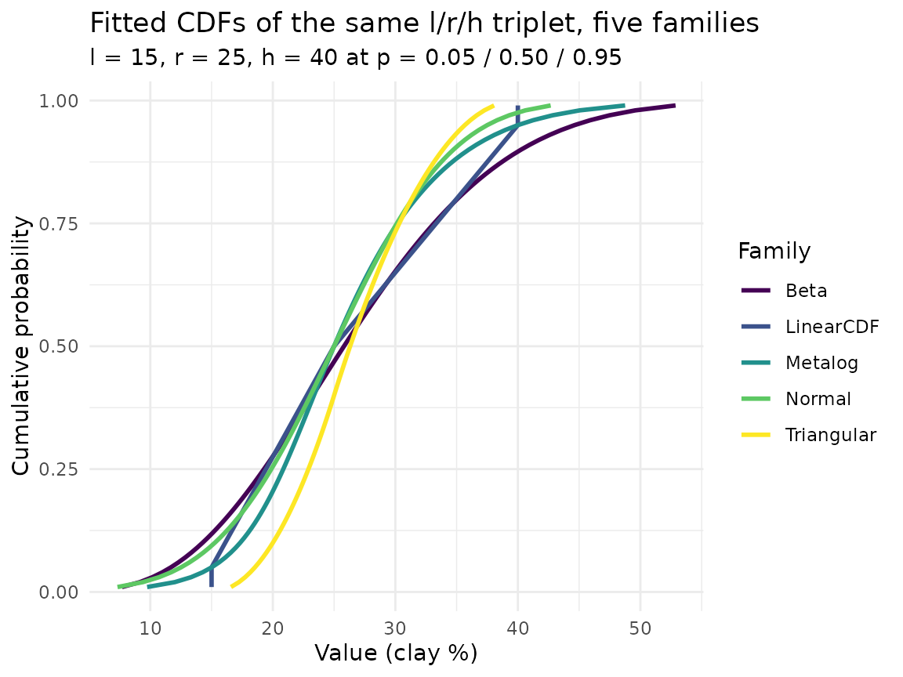
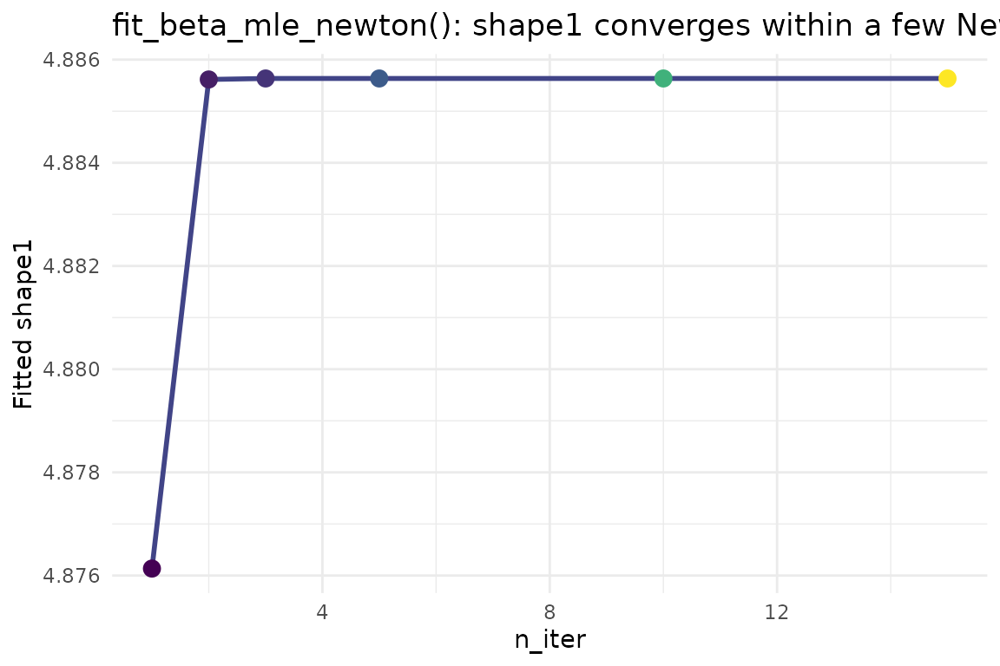
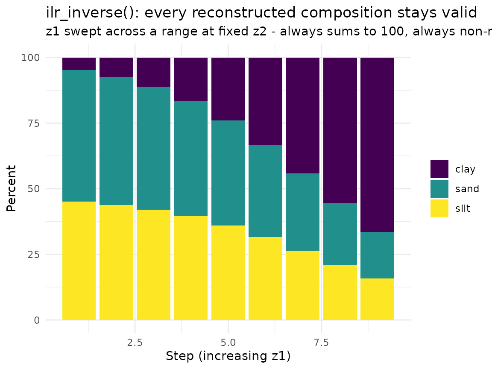
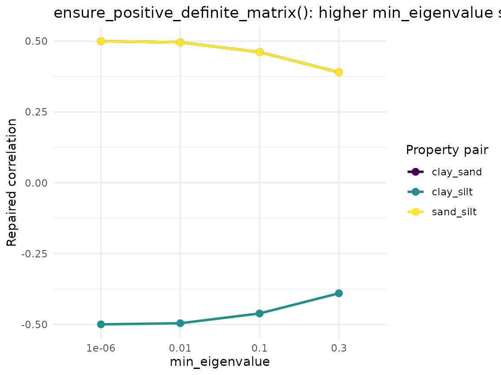

Distribution Fitting & Correlations: A Function-by-Function Tour
Source:vignettes/distribution-fitting-correlations.Rmd
distribution-fitting-correlations.RmdOverview
soilSIM’s other vignettes (e.g. “Getting Started: Tabular Monte Carlo
Simulation from SSURGO”) walk through top-level orchestrator functions
end to end on real data. This vignette instead zooms in on one thematic
group of individual functions - soilSIM’s generic,
data-source-agnostic statistical core - and shows what each one does and
how its parameters change its behavior. Nothing here knows or cares
whether a percentile triplet came from SSURGO, SOLUS, or a KSSL lab
table; these functions take plain numeric percentiles and physical
bounds and hand back fitted-distribution objects, quantile functions,
ILR-transformed compositional coordinates, and repaired
positive-definite correlation matrices. See
soilSIM/docs/03_distribution_fitting_correlations.md for
the full function-level reference.
All data in this vignette is small and synthetic - hand-constructed numbers, not a real download - so that each parameter’s effect is easy to isolate and see.
- Fit the same percentile triplet with five different distribution
families and compare their shapes directly
(
fit_normal_triplet(), Beta fitting,quantile_linear_cdf(),quantile_triangular(), metalog fitting) -
resolve_property_family()’s automatic family selection from skew, and howskew_thresholdchanges the decision -
fit_percentile_triplet()as the single master dispatcher tying the families together -
fit_beta_mle_newton()’sn_iterparameter - watching the Newton-Raphson fit actually converge - ILR (isometric log-ratio) compositional transforms:
ilr_forward()/ilr_inverse() - Correlation-matrix repair:
ensure_positive_definite_matrix()andvalidate_correlation_matrix()
Step 1: Fitting the same triplet with five different families
A single low/representative/high (l/r/h) percentile triplet, at probabilities 0.05/0.5/0.95, stands in for a clay-content-like property throughout this section:
l <- 15; r <- 25; h <- 40 # clay%, at p = 0.05 / 0.50 / 0.95
bounds <- c(0, 100) # physical bounds for the bounded familiesNote this triplet is right-skewed (the high-side spread,
(h - r) = 15, is wider than the low-side spread,
(r - l) = 10) - that skew is what later drives
resolve_property_family()’s automatic “lognormal” choice in
Step 2.
Normal: fit_normal_triplet() /
quantile_normal()
fit_normal_triplet(p_lo_val, p50_val, p_hi_val, p_lo, p_hi)
is an exact closed-form fit - no iteration. mean is just
the median value (p50_val); sd is solved
directly from the two-point spread
(p_hi_val - p_lo_val) / (qnorm(p_hi) - qnorm(p_lo)), an
algebraic consequence of the Normal’s linear quantile function.
quantile_normal(fit, q) then evaluates
mean + sd * qnorm(q) at any vector of probabilities
q.
normal_fit <- fit_normal_triplet(p_lo_val = l, p50_val = r, p_hi_val = h, p_lo = 0.05, p_hi = 0.95)
normal_fit
#> $mean
#> [1] 25
#>
#> $sd
#> [1] 7.59946
quantile_normal(normal_fit, q = c(0.05, 0.5, 0.95)) # round-trips back to l, r, h
#> [1] 12.5 25.0 37.5Beta: fit_beta_mle_newton() /
quantile_beta()
Beta fitting rescales the triplet onto [0,1] using
bounds, then fits shape1/shape2
by Newton-Raphson maximum likelihood (seeded from the closed-form
method-of-moments fit, fit_beta_mom()).
quantile_beta(fit, q) evaluates qbeta() on
[0,1]; rescaling back to raw units
(fit_percentile_triplet()/quantile_from_fit()
handle that step, shown in Step 3 below) is not part of
quantile_beta() itself.
beta_fit <- fit_beta_mle_newton(values = c(l, r, h), bounds = bounds)
beta_fit
#> $shape1
#> [1] 4.885634
#>
#> $shape2
#> [1] 13.43313
# quantile_beta() operates on [0,1]; rescale manually here for a direct comparison
bounds[1] + quantile_beta(beta_fit, q = c(0.05, 0.5, 0.95)) * diff(bounds)
#> [1] 11.67637 25.80662 44.62860Piecewise-linear: quantile_linear_cdf()
quantile_linear_cdf(probs, values, q) builds a
piecewise-linear inverse-CDF through the supplied knots via
approxfun(method = "linear", rule = 2) - exact at the
knots, with rule = 2 clamping (not extrapolating) beyond
the outermost knot.
quantile_linear_cdf(probs = c(0.05, 0.5, 0.95), values = c(l, r, h), q = c(0.05, 0.5, 0.95))
#> [1] 15 25 40
quantile_linear_cdf(probs = c(0.05, 0.5, 0.95), values = c(l, r, h), q = c(0, 1)) # clamped, not extrapolated
#> [1] 15 40Triangular: quantile_triangular()
quantile_triangular(fit, q) takes
fit = list(min=, mode=, max=) and evaluates the standard
closed-form triangular inverse-CDF, split at the mode fraction
fc = (mode - min) / (max - min). Here the l/r/h triplet
plays min/mode/max directly:
triangular_fit <- list(min = l, mode = r, max = h)
quantile_triangular(triangular_fit, q = c(0.05, 0.5, 0.95))
#> [1] 18.53553 26.30694 35.66987Metalog: fit_metalog_linear() /
quantile_metalog_linear()
With exactly 3 interior percentiles and 3 metalog terms,
fit_metalog_linear() solves an exactly-determined linear
system for the metalog coefficients (solve(Y, z)) rather
than optimizing. boundedness = "u" (unbounded) is used here
since no physical bounds are supplied.
metalog_fit <- fit_metalog_linear(interior_values = c(l, r, h), interior_probs = c(0.05, 0.5, 0.95),
boundedness = "u")
quantile_metalog_linear(metalog_fit, q = c(0.05, 0.5, 0.95)) # exact at the knots, like the others
#> [1] 15 25 40Comparing all five fitted PDFs on the same plot
Every family above reproduces
l/r/h exactly at
q = 0.05/0.5/0.95 (that’s what “fitting to the triplet”
means for each of them) - what differs is the shape connecting
those three points. Evaluating each quantile function on a fine
probability grid and differentiating numerically approximates each
family’s density:
q_grid <- seq(0.01, 0.99, by = 0.01)
families <- list(
Normal = quantile_normal(normal_fit, q_grid),
Beta = bounds[1] + quantile_beta(beta_fit, q_grid) * diff(bounds),
LinearCDF = quantile_linear_cdf(c(0.05, 0.5, 0.95), c(l, r, h), q_grid),
Triangular = quantile_triangular(triangular_fit, q_grid),
Metalog = quantile_metalog_linear(metalog_fit, q_grid)
)
cdf_df <- do.call(rbind, lapply(names(families), function(fam) {
data.frame(family = fam, q = q_grid, value = families[[fam]])
}))
ggplot(cdf_df, aes(x = value, y = q, color = family)) +
geom_line(linewidth = 1) +
scale_color_viridis_d(name = "Family") +
theme_minimal() +
labs(
title = "Fitted CDFs of the same l/r/h triplet, five families",
subtitle = "l = 15, r = 25, h = 40 at p = 0.05 / 0.50 / 0.95",
x = "Value (clay %)", y = "Cumulative probability"
)
The families agree exactly at the three fitted knots (0.05/0.5/0.95) but diverge everywhere else - Triangular is angular by construction, Normal/Beta/Metalog are smooth but differently shaped in the tails, and LinearCDF is piecewise-straight between knots with hard clamping beyond them (visible as the flat segments at the very top/bottom of its curve).
Step 2: Automatic family selection -
resolve_property_family()
resolve_property_family(l, r, h, bounds = NULL, skew_threshold = 0.15)
picks a family from a skew proxy
((h - r) - (r - l)) / (h - l) - how lopsided the high-side
spread is relative to the low-side spread around the representative
value. If bounds is supplied it always resolves to
"beta"; otherwise "normal" if the skew proxy
is within skew_threshold of zero, else
"lognormal". It deliberately never resolves to
"metalog" - that stays an explicit, opted-in choice.
symmetric <- list(l = 15, r = 25, h = 35) # (35-25) - (25-15) = 0 -> skew_proxy 0
mild_skew <- list(l = 15, r = 25, h = 40) # (40-25) - (25-15) = 5 -> skew_proxy 0.25
strong_skew <- list(l = 20, r = 24, h = 60) # (60-24) - (24-20) = 32 -> skew_proxy 0.9
triplets <- list(Symmetric = symmetric, `Mild skew` = mild_skew, `Strong skew` = strong_skew)
resolution_df <- do.call(rbind, lapply(names(triplets), function(nm) {
t <- triplets[[nm]]
res <- resolve_property_family(t$l, t$r, t$h)
data.frame(triplet = nm, l = t$l, r = t$r, h = t$h,
skew_proxy = round(res$skew_proxy, 3), family = res$family)
}))
resolution_df
#> triplet l r h skew_proxy family
#> 1 Symmetric 15 25 35 0.0 normal
#> 2 Mild skew 15 25 40 0.2 lognormal
#> 3 Strong skew 20 24 60 0.8 lognormalThe symmetric triplet resolves to "normal" (skew proxy
exactly 0, well inside the default 0.15 threshold); both skewed triplets
resolve to "lognormal". Sliding skew_threshold
up past a triplet’s own skew proxy flips the decision from
"lognormal" back to "normal":
thresholds <- c(0.05, 0.15, 0.30, 0.50)
threshold_df <- do.call(rbind, lapply(thresholds, function(th) {
res <- resolve_property_family(mild_skew$l, mild_skew$r, mild_skew$h, skew_threshold = th)
data.frame(skew_threshold = th, skew_proxy = round(res$skew_proxy, 3), family = res$family)
}))
threshold_df
#> skew_threshold skew_proxy family
#> 1 0.05 0.2 lognormal
#> 2 0.15 0.2 lognormal
#> 3 0.30 0.2 normal
#> 4 0.50 0.2 normalThe mild-skew triplet’s skew proxy is 0.25; once
skew_threshold rises above that (0.30, 0.50), the same
triplet resolves to "normal" instead of
"lognormal" - the same input data, a different family,
purely from where the threshold is drawn. Supplying bounds
overrides all of this and always resolves to "beta":
resolve_property_family(mild_skew$l, mild_skew$r, mild_skew$h, bounds = c(0, 100))$family
#> [1] "beta"Step 3: fit_percentile_triplet() - the master
dispatcher
fit_percentile_triplet(l, r, h, family, lh_probs = c(0.05, 0.95), bounds = NULL, boundedness = ...)
is the single entry point the rest of soilSIM calls - it wraps every
fitter shown in Step 1 behind one family argument
("triangular", "uniform",
"normal", "lognormal", "beta",
"metalog", "linear_cdf", or
"auto"), plus two degenerate-input guards: non-finite
l/r/h returns
valid = FALSE, and a zero-width interval
(h == l) always collapses to a triangular fit
min = mode = max = r regardless of the requested family,
since every parametric family divides by zero on a zero-width
interval.
for (fam in c("normal", "beta", "lognormal", "triangular", "metalog", "auto")) {
result <- fit_percentile_triplet(l, r, h, family = fam, bounds = if (fam == "beta") bounds else NULL)
cat(sprintf("%-10s -> resolved family = %-10s valid = %s\n", fam, result$family, result$valid))
}
#> normal -> resolved family = normal valid = TRUE
#> beta -> resolved family = beta valid = TRUE
#> lognormal -> resolved family = lognormal valid = TRUE
#> triangular -> resolved family = triangular valid = TRUE
#> metalog -> resolved family = metalog valid = TRUE
#> auto -> resolved family = lognormal valid = TRUEfamily = "auto" with no bounds resolves
through resolve_property_family() exactly as in Step 2
(this triplet’s skew proxy of 0.25 exceeds the default 0.15 threshold,
so it resolves to "lognormal"). Once fitted,
quantile_from_fit(u, family, fit) is the matching master
quantile dispatcher - the same round-trip Step 1 built by hand
for each family individually:
auto_fit <- fit_percentile_triplet(l, r, h, family = "auto")
quantile_from_fit(u = c(0.05, 0.5, 0.95), family = auto_fit$family, fit = auto_fit$fit)
#> [1] 15.30931 25.00000 40.82483The zero-width-interval guard, demonstrated directly:
fit_percentile_triplet(l = 25, r = 25, h = 25, family = "beta", bounds = bounds)
#> $family
#> [1] "triangular"
#>
#> $fit
#> $fit$min
#> [1] 25
#>
#> $fit$mode
#> [1] 25
#>
#> $fit$max
#> [1] 25
#>
#>
#> $valid
#> [1] TRUEStep 4: fit_beta_mle_newton()’s n_iter
parameter - watching convergence
fit_beta_mle_newton(values, bounds, n_iter = 15, eps = 1e-6)
runs a fixed number of Newton-Raphson steps - there is no
internal convergence check, so n_iter directly controls how
close the fit gets to the true MLE. Refitting the same values at
increasing n_iter shows the shape parameters (and the
resulting quantiles) settle down after only a few steps:
n_iters <- c(1, 2, 3, 5, 10, 15)
convergence_df <- do.call(rbind, lapply(n_iters, function(ni) {
fit_i <- fit_beta_mle_newton(values = c(l, r, h), bounds = bounds, n_iter = ni)
q_i <- bounds[1] + quantile_beta(fit_i, q = c(0.05, 0.5, 0.95)) * diff(bounds)
data.frame(n_iter = ni, shape1 = fit_i$shape1, shape2 = fit_i$shape2,
q05 = q_i[1], q50 = q_i[2], q95 = q_i[3])
}))
convergence_df
#> n_iter shape1 shape2 q05 q50 q95
#> 1 1 4.876135 13.40713 11.66420 25.80474 44.64633
#> 2 2 4.885615 13.43308 11.67634 25.80661 44.62864
#> 3 3 4.885634 13.43313 11.67637 25.80662 44.62860
#> 4 5 4.885634 13.43313 11.67637 25.80662 44.62860
#> 5 10 4.885634 13.43313 11.67637 25.80662 44.62860
#> 6 15 4.885634 13.43313 11.67637 25.80662 44.62860
ggplot(convergence_df, aes(x = n_iter, y = shape1)) +
geom_line(color = viridisLite::viridis(1, begin = 0.2), linewidth = 1) +
geom_point(aes(color = n_iter), size = 3) +
scale_color_viridis_c(guide = "none") +
theme_minimal() +
labs(
title = "fit_beta_mle_newton(): shape1 converges within a few Newton-Raphson steps",
x = "n_iter", y = "Fitted shape1"
)
shape1 (and shape2, not plotted) moves the
most between n_iter = 1 and n_iter = 3, then
barely changes from n_iter = 5 onward -
n_iter = 15 (soilSIM’s default everywhere else) is well
past the point of diminishing returns for this triplet, which is exactly
why a fixed iteration count without a convergence check is a safe design
choice here.
Step 5: ILR compositional transforms
Soil texture (clay/sand/silt) is a 3-part composition that must sum
to a fixed total (e.g. 100%) and stay non-negative - ordinary
independent simulation of each fraction can’t guarantee that.
ilr_forward()/ilr_inverse() are soilSIM’s
isometric log-ratio transform: they move a composition to/from a
2-dimensional unconstrained coordinate system where ordinary
Normal-distribution machinery applies safely, with the constraint
automatically satisfied on the way back.
# A synthetic clay/sand/silt composition
example_composition <- c(clay = 24, sand = 40, silt = 36)
sum(example_composition)
#> [1] 100
z <- ilr_forward(clay = example_composition["clay"], sand = example_composition["sand"],
silt = example_composition["silt"])
z # 2 unconstrained coordinates, z1/z2
#> z1 z2
#> clay -0.3740741 0.07450114
back <- ilr_inverse(z1 = z[, "z1"], z2 = z[, "z2"], total = 100)
back # round-trips back to the original composition
#> clay sand silt
#> [1,] 24 40 36
sum(back)
#> [1] 100Perturbing the ILR coordinates and inverting always yields a valid
composition - non-negative and summing exactly to total -
which is the point of doing simulation in ILR space rather than directly
on clay/sand/silt:
set.seed(42)
z1_perturbed <- z[, "z1"] + seq(-1.5, 1.5, length.out = 9)
z2_perturbed <- rep(z[, "z2"], 9)
perturbed_compositions <- as.data.frame(ilr_inverse(z1_perturbed, z2_perturbed, total = 100))
perturbed_compositions$step <- seq_len(9)
stack_df <- do.call(rbind, lapply(c("clay", "sand", "silt"), function(part) {
data.frame(step = perturbed_compositions$step, fraction = part,
pct = perturbed_compositions[[part]])
}))
ggplot(stack_df, aes(x = step, y = pct, fill = fraction)) +
geom_col() +
scale_fill_viridis_d(name = NULL) +
theme_minimal() +
labs(
title = "ilr_inverse(): every reconstructed composition stays valid",
subtitle = "z1 swept across a range at fixed z2 - always sums to 100, always non-negative",
x = "Step (increasing z1)", y = "Percent"
)
Every bar in the stack sums to exactly 100 -
ilr_inverse()’s softmax-like normalization guarantees this
by construction, for any finite z1/z2.
Step 6: Correlation-matrix repair
Multi-property Monte Carlo simulation needs a positive-definite (PD)
correlation matrix for its Cholesky-copula step. Empirically estimated
or hand-assembled correlation matrices are not always PD -
ensure_positive_definite_matrix() repairs one via
eigenvalue flooring, and validate_correlation_matrix()
checks whether a candidate matrix is already usable.
A deliberately broken, non-positive-definite 3x3 correlation matrix (valid-looking diagonal and range, but internally inconsistent pairwise correlations):
broken_matrix <- matrix(
c( 1.0, 0.9, -0.9,
0.9, 1.0, 0.9,
-0.9, 0.9, 1.0),
nrow = 3, dimnames = list(c("clay", "sand", "silt"), c("clay", "sand", "silt"))
)
broken_matrix
#> clay sand silt
#> clay 1.0 0.9 -0.9
#> sand 0.9 1.0 0.9
#> silt -0.9 0.9 1.0
eigen(broken_matrix, only.values = TRUE)$values # a negative eigenvalue confirms it's not PD
#> [1] 1.9 1.9 -0.8
validate_correlation_matrix(broken_matrix, properties = c("clay", "sand", "silt"))
#> $valid
#> [1] FALSE
#>
#> $message
#> [1] "Matrix is not positive definite"ensure_positive_definite_matrix(matrix, min_eigenvalue = 1e-6)
eigendecomposes the matrix, floors any eigenvalue below
min_eigenvalue, reconstructs, and rescales back to a
unit-diagonal correlation matrix (also restoring the original dimnames,
which eigen()$vectors does not carry):
repaired_matrix <- ensure_positive_definite_matrix(broken_matrix)
repaired_matrix
#> clay sand silt
#> clay 1.0000000 0.4999996 -0.4999996
#> sand 0.4999996 1.0000000 0.4999996
#> silt -0.4999996 0.4999996 1.0000000
eigen(repaired_matrix, only.values = TRUE)$values # all positive now
#> [1] 1.500000e+00 1.500000e+00 7.894735e-07
validate_correlation_matrix(repaired_matrix, properties = c("clay", "sand", "silt"))
#> $valid
#> [1] TRUE
#>
#> $message
#> [1] ""Raising min_eigenvalue pushes the repaired matrix
further from the (broken) original toward a better-conditioned but less
“confident” correlation structure - visible as the off-diagonal
correlations shrinking toward zero as the floor rises:
floors <- c(1e-6, 0.01, 0.1, 0.3)
floor_df <- do.call(rbind, lapply(floors, function(mv) {
r <- ensure_positive_definite_matrix(broken_matrix, min_eigenvalue = mv)
data.frame(min_eigenvalue = mv, clay_sand = r["clay", "sand"], clay_silt = r["clay", "silt"],
sand_silt = r["sand", "silt"])
}))
floor_df_long <- do.call(rbind, lapply(c("clay_sand", "clay_silt", "sand_silt"), function(pair) {
data.frame(min_eigenvalue = floor_df$min_eigenvalue, pair = pair, correlation = floor_df[[pair]])
}))
ggplot(floor_df_long, aes(x = factor(min_eigenvalue), y = correlation, color = pair, group = pair)) +
geom_line(linewidth = 1) +
geom_point(size = 2.5) +
scale_color_viridis_d(name = "Property pair") +
theme_minimal() +
labs(
title = "ensure_positive_definite_matrix(): higher min_eigenvalue shrinks correlations",
x = "min_eigenvalue", y = "Repaired correlation"
)
validate_correlation_matrix(corr_matrix, properties) is
the cheaper, non-repairing counterpart - it only checks shape (square,
matching length(properties)), unit diagonal, and positive
definiteness, returning the first failing check’s message rather than
fixing anything. Together these two functions are the shared final guard
both estimate_correlation_matrix_robust() and
build_kssl_fallback_matrix() route their correlation
matrices through before the Cholesky-copula simulation step consumes
them.